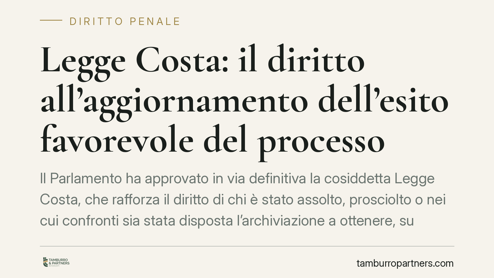

Legge Costa: il diritto all'aggiornamento dell'esito favorevole del processo
Il Parlamento ha approvato in via definitiva la cosiddetta Legge Costa, che rafforza il diritto di chi è stato assolto, prosciolto o nei cui confronti sia stata disposta l'archiviazione a ottenere, su richiesta, la pubblicazione dell'esito favorevole da parte delle testate che avevano dato notizia del procedimento. Non un obbligo automatico di pubblicare ogni assoluzione, ma uno strumento di riequilibrio informativo a tutela della reputazione.

Il quadro: cosa prevede davvero la Legge Costa
La riforma nota come "Legge Costa", dal nome del parlamentare proponente, interviene sul rapporto tra cronaca giudiziaria e tutela della persona. Il punto centrale non è un generico "obbligo di pubblicare le assoluzioni", formula diffusa ma imprecisa.
La norma riconosce invece all'interessato il diritto di chiedere alla testata che aveva pubblicato la notizia del procedimento penale di dare conto, con rilievo adeguato, dell'esito favorevole: assoluzione, proscioglimento, sentenza di non luogo a procedere o archiviazione.
L'intervento si colloca nel solco della disciplina sulla protezione dei dati personali (D.lgs. 196/2003, Codice privacy) e del coordinamento con la Legge sulla stampa (L. 47/1948). In caso di inerzia della testata, l'interessato può rivolgersi al Garante per la protezione dei dati personali.
> Nota di metodo. La collocazione testuale esatta della novella all'interno del Codice privacy va riscontrata sulla Gazzetta Ufficiale una volta pubblicato il testo definitivo. Evitiamo di indicare un numero di articolo non confermato: su questioni di reputazione preferiamo la cautela all'approssimazione.
I poteri del Garante
Dopo l'adeguamento al GDPR (Reg. UE 2016/679, attuato in Italia con il D.lgs. 101/2018), i poteri correttivi del Garante trovano fondamento principale negli artt. 57 e 58 del Regolamento europeo, oltre che nelle disposizioni del Codice privacy nella versione vigente (artt. 143 e seguenti). In questo perimetro, a fronte di una richiesta non evasa, il Garante può ordinare alla testata la pubblicazione dell'informazione sull'esito favorevole.
L'autorità non sostituisce il giudice e non liquida danni: interviene sul trattamento dei dati personali connesso alla notizia e ne impone l'aggiornamento.
Una precisazione tecnica sulle categorie
Le quattro situazioni richiamate non sono sinonimi e producono effetti diversi.
- Assoluzione (art. 530 c.p.p.): esito del dibattimento quando il fatto non sussiste, l'imputato non lo ha commesso, il fatto non costituisce reato o manca la prova.
- Proscioglimento (artt. 529-531 c.p.p.): categoria più ampia che comprende, oltre all'assoluzione, le pronunce di non doversi procedere (ad esempio per difetto di una condizione di procedibilità o per prescrizione).
- Non luogo a procedere (art. 425 c.p.p.): decisione del giudice dell'udienza preliminare che chiude il procedimento prima del dibattimento.
- Archiviazione (artt. 408 e seguenti c.p.p.): provvedimento che definisce le indagini preliminari quando la notizia di reato è infondata o gli elementi non reggono l'accusa in giudizio.
Sono tutti esiti favorevoli, ma sintetizzarli tutti come "assoluzione" è scorretto. La richiesta all'editore dovrebbe indicare con precisione la pronuncia effettivamente intervenuta.
Aggiornare non è cancellare
Qui si coglie la logica della riforma. Esistono due piani distinti.
Da un lato la rimozione o deindicizzazione dell'articolo originario, misura invasiva e concessa solo in presenza di condizioni stringenti (diritto all'oblio in senso proprio). Dall'altro il diritto all'aggiornamento del quadro informativo: l'articolo originario resta, ma viene integrato o accompagnato dalla notizia dell'esito favorevole.
La Legge Costa rafforza soprattutto il secondo profilo. Non pretende di riscrivere la cronaca passata, ma di impedire che resti "congelata" alla fase accusatoria, lasciando il lettore all'informazione più sfavorevole.
Il nodo del "rilievo adeguato"
Il punto più delicato in sede applicativa è il concetto di rilievo adeguato. La notizia dell'esito favorevole deve avere una visibilità proporzionata a quella data all'addebito iniziale.
Il problema è probatorio: dimostrare quale fosse la visibilità originaria. Un conto è un trafiletto interno, un conto un titolo di apertura con foto. Consigliamo di documentare fin da subito la visibilità dell'articolo originario (posizione, titolazione, data, eventuale rilancio sui social), perché sarà l'elemento su cui si misurerà l'adeguatezza della pubblicazione successiva.
Cosa cambia per chi è stato coinvolto in un procedimento
Per chi ha subito l'attenzione mediatica di un'indagine poi conclusa senza condanna, lo strumento offre una via più agile rispetto alla causa civile per danni. Non la sostituisce, ma può precederla o affiancarla, e opera su un piano reputazionale immediato.
Cosa fare in concreto
- Raccogliete il provvedimento che attesta l'esito favorevole (sentenza, decreto di archiviazione) in copia conforme o comunque completa.
- Documentate l'articolo originario: salvate pagina, URL, data, titolo e collocazione, con screenshot e marca temporale ove possibile.
- Inviate una richiesta formale alla testata, indicando con precisione la pronuncia e chiedendo la pubblicazione con rilievo proporzionato all'originaria notizia.
- Fissate un termine ragionevole e conservate la prova dell'invio e dell'eventuale mancato riscontro.
- In caso di inerzia, valutate il reclamo al Garante, allegando la documentazione raccolta.
Disclaimer
Contributo informativo a cura di Tamburro & Partners - Avv. Giuseppe Tamburro. Non costituisce parere legale.
Ogni condominio ha una storia a sé.
Se gestisci un'amministrazione e vuoi un confronto su una specifica questione condominiale, scrivi allo studio. Ti rispondiamo entro un giorno lavorativo.